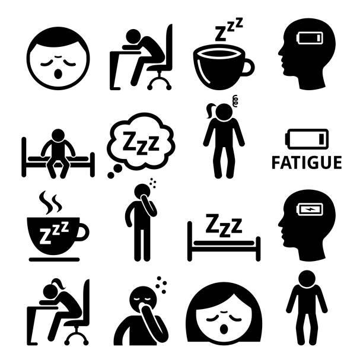
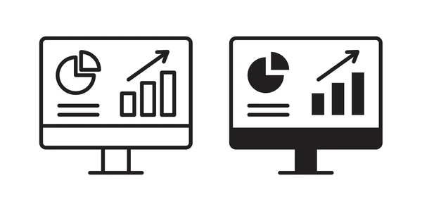
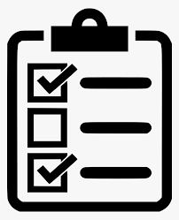
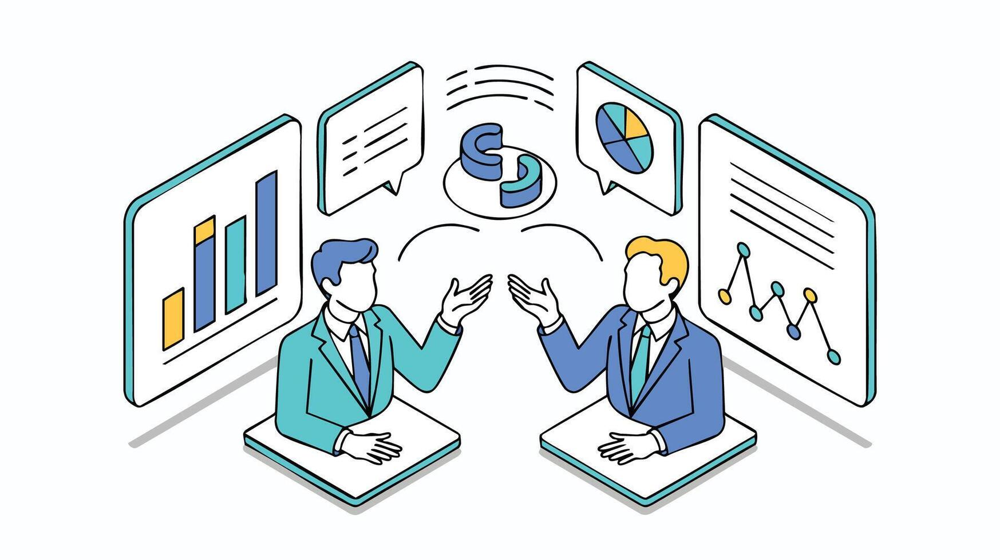

MeetPulse AI analyzes meeting engagement, silence patterns, speaker dominance, fatigue signals, and communication quality using behavioral AI analytics.
82% Active Participation
Attention Drop After 34 Minutes
One Speaker Used 68% Airtime
Team members stay present in meetings but mentally disconnect from discussions.
One person controls most of the conversation while others stop contributing.
Meetings end without clear ownership, deadlines, or action tracking.

Detects attention drop and identifies the exact moment engagement decreases.

Measures silence windows, participation balance, and interaction quality.

Automatically extracts tasks, owners, deadlines, and commitment strength.
Analyze fatigue trends, engagement levels, speaker balance, silence pressure, and meeting productivity through smart dashboards.

Detection Accuracy
Behavioral Signals
Smarter Insights
AI Monitoring
MeetPulse AI focuses on meeting psychology, participation quality, behavioral analytics, and engagement intelligence instead of only recording conversations.
Explore intelligent meeting analytics with MeetPulse AI.